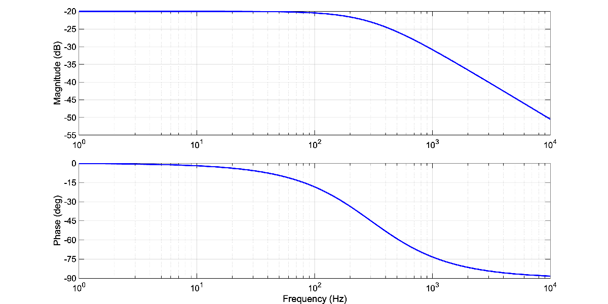
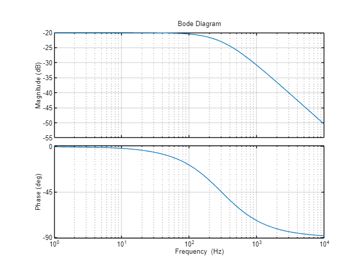
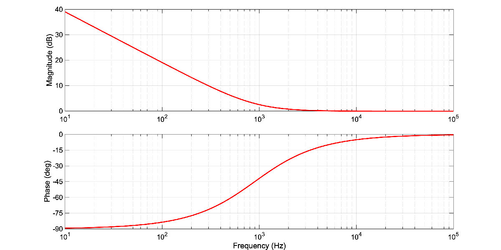
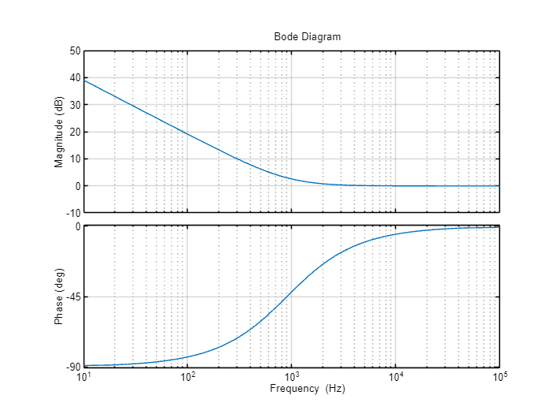
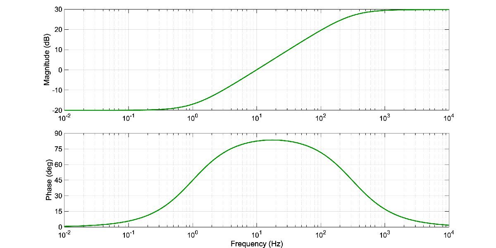
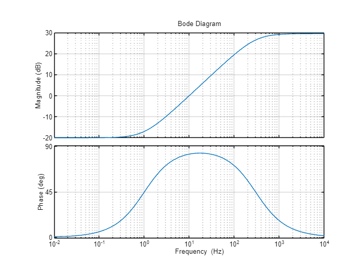
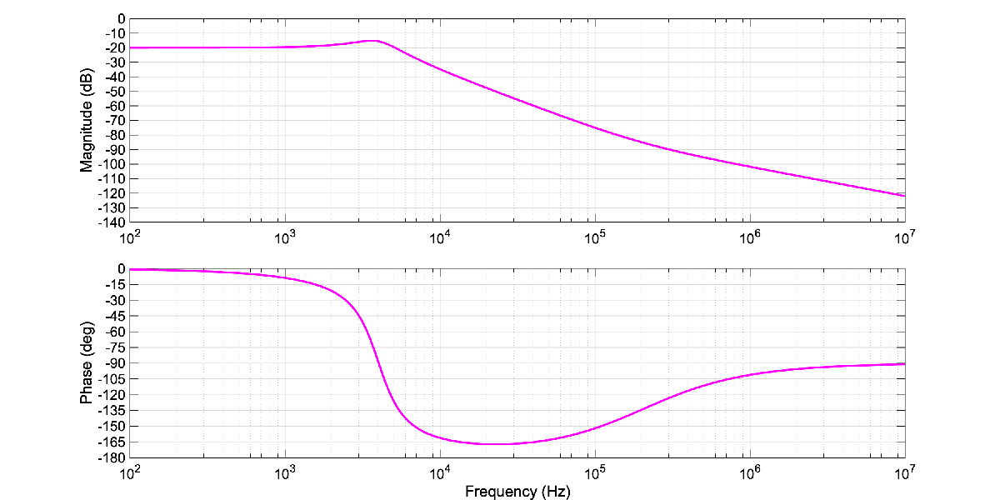
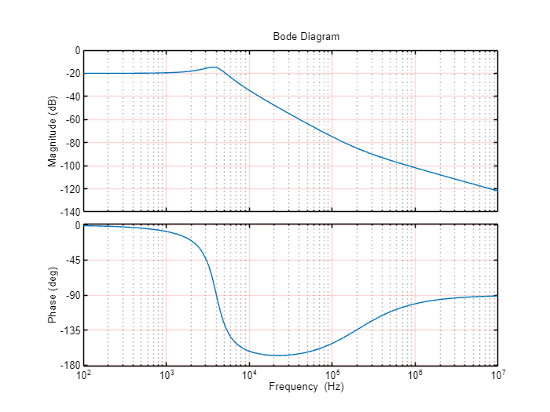

Bode Inverse Estimation
Analysis on Frequency Responses using Transfer Functions of a given System
clear, clc
set(0,'defaultlinelinewidth',2);
s= tf('s')s =
s
Continuous-time transfer function.
Model PropertiesReview of Transfer Functions and Frequency Responses
In a classical feedback control, we should know how to sketch a Bode diagram given a Laplace-domain transfer function. One of the first steps in the sketching procedure was to factor the transfer function into first-order and second-order building blocks. The list below shows the standard seven building blocks in normalized form (normalized is not the only form, but these seven are the only building blocks). Any transfer function can be factored into products of these seven terms.
Gain: \(K\)
First-order Pole at Origin: \(\left(\frac{1}{s}\right)\) First-order Zero at Origin: \(\left(\frac{s}{1}\right)\)
First-order Real Pole: \(\left(\frac{p}{s+p}\right)\) First-order Real Zero: \(\left(\frac{s+z}{z}\right)\)
Second-order Pole: \(\left(\frac{\omega_p^2 }{s^2 +2\zeta_p \omega_p +\omega_p^2 }\right)\) Second-order Zero: \(\left(\frac{s^2 +2\zeta_z \omega_z +\omega_z^2 }{\omega_z^2 }\right)\)
If one understands how to sketch a Bode diagram for a transfer function, they should also understand how to do the inverse problem of estimating a mathematical transfer function from a given Bode diagram (for relatively simple systems).
Thus, here we are applying our knowledge of sketching Bode diagrams to accurately estimate the Laplace-domain transfer functions associated with each frequency response below.
Note: The term “accurately estimate” means that we are expected to extract numerical information from the frequency response plots (e.g. slopes, frequencies, gains) to determine numerical values for the transfer function parameters based on the normalized building blocks above. After we have generated our estimated transfer function, we must compute and plot the frequency response in a properly annotated figure (like the ones provided below). Thus in this verification process, our plots should have the same grid lines, ranges, labels, etc, as the provided plots initially.
Case 1
Desired Magnitude and Phase

options = bodeoptions;
options.FreqUnits = 'Hz'; % or 'rad/second', 'rpm', etc.
options.MagScale = 'linear';
options.MagLowerLimMode = 'manual';
options.MagLowerLim = -55;
options.XLimMode = 'manual';
options.XLim = [10^0 10^4];
options.Grid = 'on';
figure(1)
pole = 3e2*2*pi;
g0 = 10^(-20/20);
tf = g0 * 1/(s/pole + 1);
bode(tf, options)Output:

Case 2
Desired Magnitude and Phase

options = bodeoptions;
options.FreqUnits = 'Hz'; % or 'rad/second', 'rpm', etc.
options.MagScale = 'linear';
options.XLimMode = 'manual';
options.XLim = [10^1 10^5];
options.Grid = 'on';
figure(2)
zero = 900*2*pi;
g0 = 10^(75/20);
tf = g0* 1 / s * (s+zero)/zero;
bode(tf, options)Output:

Case 3
Desired Magnitude and Phase

options = bodeoptions;
options.FreqUnits = 'Hz'; % or 'rad/second', 'rpm', etc.
options.MagScale = 'linear';
options.XLimMode = 'manual';
options.XLim = [10^(-2) 10^4];
options.Grid = 'on';
figure(3);
zero = 2*pi;
pole = 3e2*2*pi;
g0= 10^(-20/20);
tf= g0 * (s/zero + 1)/(s/pole + 1);
bode(tf, options)Output:

Case 4
Desired Magnitude and Phase

options = bodeoptions;
options.FreqUnits = 'Hz'; % or 'rad/second', 'rpm', etc.
options.MagScale = 'linear';
options.MagLowerLimMode = 'manual';
options.MagLowerLim = -140;
options.XLimMode = 'manual';
options.XLim = [10^2 10^7];
options.Grid = 'on';
options.GridColor = 'red';
figure(4)
pole = 4e3*2*pi;
zero = 2e5*2*pi;
QdB=5;
Q=10^(QdB/20);
zeta= 1/(2*Q);
g0=10^(-20/20);
tf = g0 * pole^2/(s^2 + 2*zeta*pole*s + pole^2) * (s+zero)/zero;
bode(tf,options)Output:
